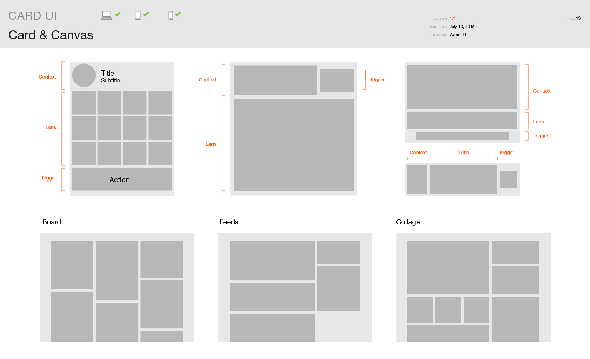
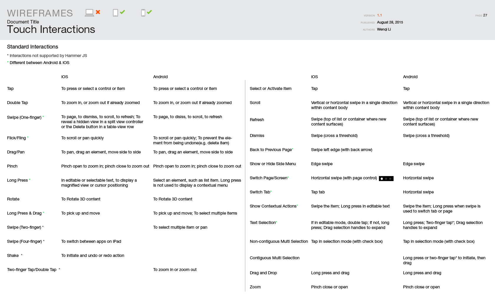
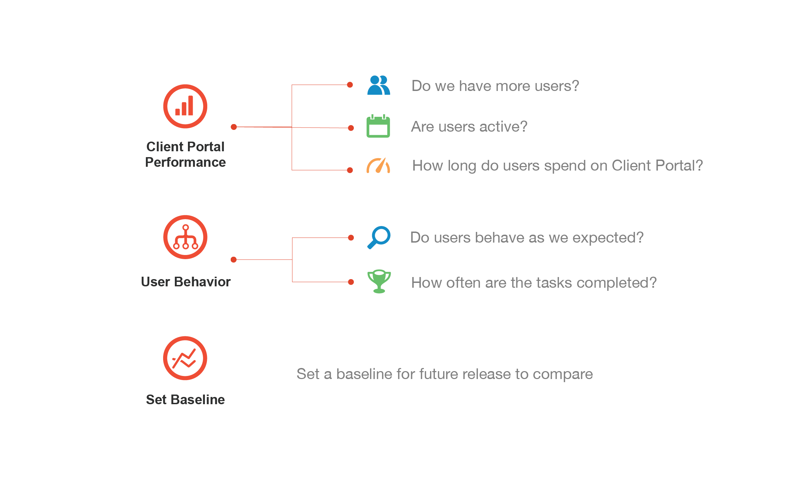
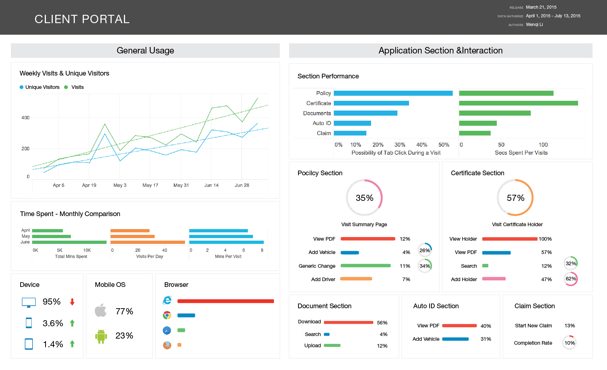

All About Iterative Problem Solving
Currently we have tiles and panels as information container in our platform. While tiles only give a peak to small fraction of highlighted information, panels contain too much information and the things users really care got buried. Meanwhile our panel is arbitrary size, and when users change one size, the others change too. So we propose card as a inbetween information level, which can also be composed more gracefully.
We explored the card anatomy and different canvas layouts as well as a cross-industry study.
Most of our products are webapps. We are now moving to mobile, as more of our clients now works on tablets or phones in the field. The touch interaction framework we are using is Hammer.JS, thus we need to figure out what are the iOS and Android standards within the limitation of Hammer.JS, and map them to mouse click and keyboard shortcuts.
Our XD team recently started using Adobe Analytics to study user behavior. The analysis can be used to validate and guide our design. Client Portal is one of the first products that implemented Adobe Analytics taggs, and I analyzed the data from March 21 release. The analysis is presented to our internal XD team as well as product and development team. I also built a standard dashboard template for future analysis.
 I ran several concept designs on the customized insert cursor.
Most of Vertafore's products are acquired, they all have different color palette. While we are trying to keep our branding consistent, we also want create hierarchy and balance within the UI to deliver better user experience. So together with the visual designers, we explored the color usage in our products.